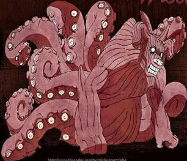

Cargando


Shukaku
Shukaku es el Biju de Una Cola de Elemento Viento, también conocido en algunos sitios del mundo ninja como "La Encarnación de la Arena" o el Tanuki Monstruo. Su apariencia está inspirada en el mapache japonés, solo que aquí es representado con una forma corpulenta del color de la arena, mientras incorpora líneas por todo su cuerpo de color azul y ojos negros con iris amarillo. Por otro lado, su personalidad es bastante ilógica, pero a la vez inteligente y es considerado como el más débil porque cuenta con la menos cantidad de cola. A pesar de eso, aunque no sea el de la mejor ofensiva, es el único que cuenta con una defensa casi impenetrable. Anteriormente, Shukaku se encontraba sellado en el sacerdote Bunpuku, pero posteriormente fue heredado por Gaara, el portador más reciente y el Quinto Kazekage de Sunagakure (Aldea Oculta de la Arena).
Matatabi
Matatabi fue sellado en Yugito Nii, una joven ninja de Kumogakure (Aldea Oculta de las Nubes) que tras un forzado entrenamiento llegó a controlar su transformación en Bestia con Cola a voluntad propia desde muy poca edad. El Biju de Dos Colas es de Elemento Fuego, siendo similar a un gato manifestado como espíritu con reflejos negros y tiene heterocromía en los ojos. En cuanto a sus habilidades características, se encuentra la capacidad de lanzar bolas grandes de fuego.
Isobu
Isobu es el Biju de Tres Colas que tiene forma de Tortuga Gigante, con una gran cobertura de armadura gris, colas similares a la de los camarones y un solo ojo. En un principio, la bestia fue sellada en Rin Nohara de Konoha (Aldea Oculta de la Hoja), tras su fallecimiento, Yagura Karatachi de se convirtió en el jinchuriki, mientras que también era el Cuarto Mizukage de Kirigakure (Aldea Oculta de la Niebla). A diferencia de otros Biju, este no cuenta con una personalidad tan agresiva y odiosa, sino que es más tímido y amigable. Isobu es de Elemento Agua y tiene una increíble capacidad para batallar en el mar.
Goku
Sí, tal cual como Son Goku de Dragon Ball, su nombre es una referencia a Dragon Ball debido a que el creador de Naruto es fan del anime. De hecho, su forma animal está basada en un gorila y el jinchuriki se llama "Roshi", otra referencia a dicha franquicia. El Biju de Cuatro Colas también es conocido como "Rey de los Monos Sabio", su pelaje es de color rojo y su piel de color verde muy claro, así mismo, sus ojos son amarillos y cuenta con dos cuernos en la parte frontal de su cabeza. Son Gokū fue sellado en Roshi, un anciano de Iwagakure (Aldea Oculta entre las Rocas) con gran destreza en el Elemento Fusión, aunque fue derrotado por Kisame. Además, la Bestia de Cuatro Colas tiene las habilidades de Llamarada de Fuego Verde, el uso de Taijutsu y una gran fuerza física en comparación con otros Biju.
Kokuo
La extraña apariencia de Kokuō parece una combinación entre el cuerpo de un caballo y la cabeza de un delfín con cinco cuernos, aunque también es completamente de color blanco con detalles beige. Este Biju veloz y fuerte, fue sellado en Han, un soldado de Iwagakure que participó en la Tercera Guerra Mundial Shinobi y fue reconocido por su habilidad con el ninjutsu de Elemento Ebullición.
Saiken
El Biju de Seis Colas se muestra como una gran babosa de color blanco con ojos similares a los de un caracol. Este tiene una extraña manera de resistir ataques potentes de Kinjutsu y también adquiere la capacidad de comunicarse telepáticamente con otras bestias. Debido a su composición, puede generar tanto líquido, como gas tóxico, siendo capaz de emplear el Campo de Baba Pegajosa y Burbujas de Jabón. Saiken fue sellado en Utakata de Kirigakure, quien se convirtió en un ninja renegado tras asesinar a su maestro Harusame al transformarse en la Bestia de Seis Colas en un intento de despojarse del Biju.
Chomei
El jinchuriki de Chōmei es una kunoichi de Takigakure (Aldea Oculta de la Cascada) llamada Fū, una experta en los ataques sorpresa y comunicación a distancia. Con respecto al diseño del Biju de Siete Colas, está basado en el escarabajo rinoceronte japonés, donde sus alas representan cada una de sus alas, mientras que cuenta con una mandíbula en forma de tenaza y ojos naranja brillantes en forma de casco de caballería.
Gyuki
Killer B es uno de los personajes más populares del anime por su interesante forma de hablar rapeando y momentos graciosos, pero también por ser el mentor de Naruto y jinchuriki del Gyuki en Kumogakure. Este Biju de Ocho Colas tiene una composición corporal mitad pulpo y mitad buey. Además, es considerado como la segunda Bestia con Colas más poderosa de todas, ya que tiene una gran experiecia en combate, donde algunas de sus habilidades más llamativas son el Remolino de Viento, contención de Bola de Bestia con Cola, resistencia al Amaterasu. Gyūki es uno de los pocos que mantiene una muy buena relación con su jinchuriki.
Kurama
Aunque es conocido por muchos como "Kyubi", el nombre real del Biju de Nueve Colas es Kurama. De todas las Bestias con Cola, esta es la más agresiva y detestable por su manera de pensar siempre en sí mismo o para su beneficio, aunque con el tiempo cambia al comunicarse con Naruto en sistuaciones complicadas y lo ayuda. El diseño de Kurama está inspirado en un zorro con un cuerpo semihumano y el Kitsune de la mitología japonesa. Este es considerado como el más poderoso de todos los Biju y el más difícil de controlar. No obstante, después de todo no puede haber un Naruto sin Kurama y un Kurama sin Naruto, ya que ambos se necesitan así mismos para mantenerse con vida.